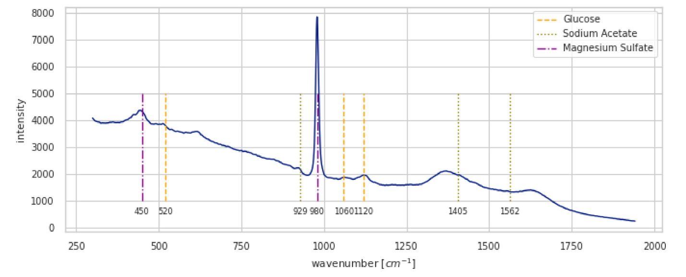
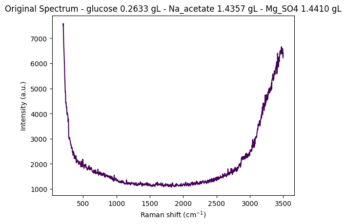
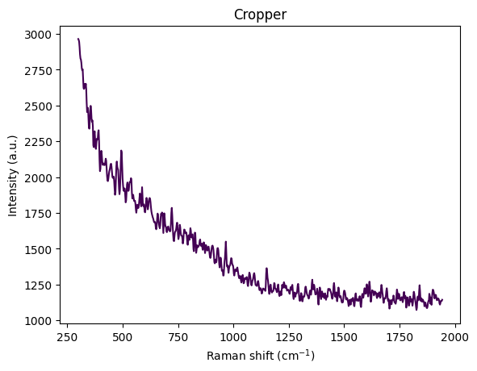
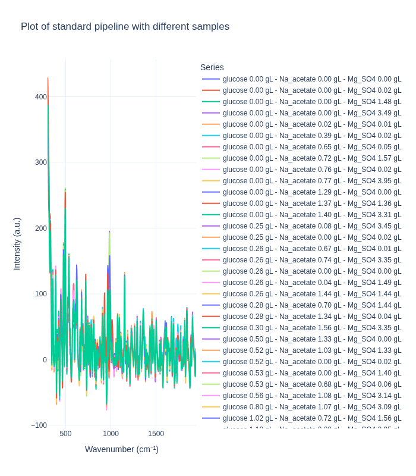
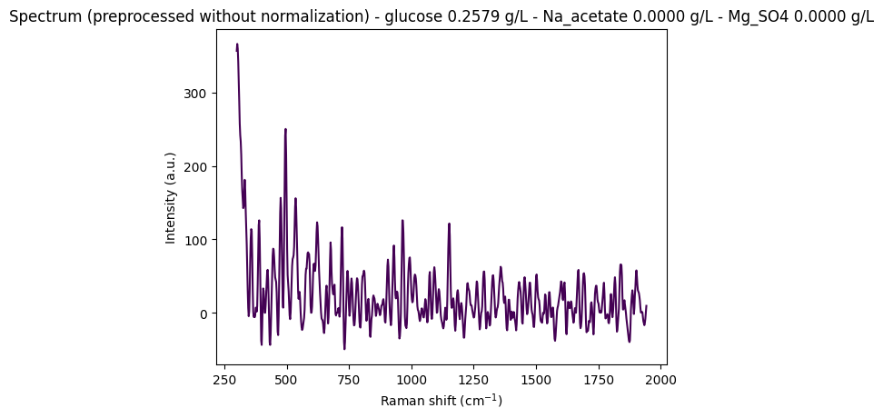
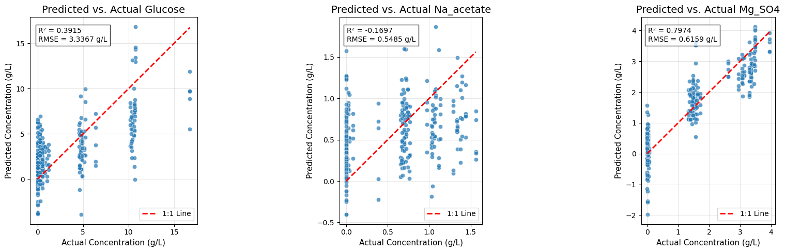

from pathlib import Path
from typing import Literal
import numpy as np
import pandas as pd
import plotly.express as px
import ramanspy as rp
import warnings
warnings.filterwarnings("ignore", category=SyntaxWarning)This blog post is inspired by an interview homework and a Kaggle competition. The objective is to provide an overview of Raman spectroscopy and provide some ML approaches to analyze Raman spectra. The associated code is available on GitHub at raman-spectra.
In the first part, Section 1, we review the physical principles underlying Raman scattering, the distinction between Stokes and anti-Stokes lines, the relationship between Raman and IR selection rules, and the main components of a Raman spectrometer.
The second part, Section 2, uses the Dig4Bio Raman Transfer Learning Challenge dataset as a concrete example. Through the accompanying notebook, we perform a brief exploratory data analysis and motivate the need for a robust preprocessing pipeline when working with real-world spectra from multiple instruments. The dedicated section Section 2.3 then details the individual steps of this pipeline—spectral cropping, Whitaker–Hayes cosmic-ray removal, Savitzky–Golay denoising, and ASPLS baseline correction—both conceptually and mathematically, following their implementation in RamanSPy.
The third part Section 3, focuses on predicting analyte concentrations from preprocessed spectra. We start with a classical chemometrics baseline using PLS Canonical (PLSW2A), reviewing the underlying algorithm, the geometry of scores, loadings, and rotation matrices, and how these pieces assemble into a linear map from spectra to concentrations. The goal is to provide a transparent, end-to-end example of a supervised learning pipeline—from raw spectra, through preprocessing, to a calibrated regression model.
Finally, the accompanying codebase extends beyond traditional PLS models and includes an experimental transformer-based toolkit, SpecBERT, for spectral analysis. SpecBERT adapts BERT/ViT-style encoders to 1D Raman spectra, using Masked Spectral Modeling (MSM) for self-supervised pretraining on large unlabeled spectral collections, followed by supervised fine-tuning for regression or classification. This implementation is intentionally labeled as experimental: it was largely generated with AI assistance as a proof of concept and should be treated as a starting point rather than production-ready software. Nevertheless, it illustrates how modern representation-learning techniques can complement classical chemometric methods when spectral data are abundant but accurate concentration labels are scarce.
Raman Spectroscopy: An Overview
This section provides an overview of Raman spectroscopy, including the theoretical principle, instrumentation, and interpretation of the Raman spectrum. The main source is the Wikipedia article (Wikipedia contributors 2025).
Introduction: What is Raman Spectroscopy?
Raman Spectroscopy is a non-destructive analytical technique used to observe vibrational, rotational, and other low-frequency modes in a system. It provides a structural “fingerprint” by which molecules can be identified and characterized.
The technique is named after Indian physicist Sir C. V. Raman, who, along with his student K. S. Krishnan, discovered the phenomenon in 1928, earning Raman the Nobel Prize in Physics in 1930.
At its core, Raman spectroscopy relies on the inelastic scattering of monochromatic light, usually from a laser. When light interacts with a molecule, most of it is scattered at the same energy (and wavelength) as the incident light. This is called Rayleigh Scattering. However, a tiny fraction of the light (about 1 in 10 million photons) is scattered at a different energy. This inelastic scattering is the Raman Effect, and the energy difference provides the chemical and structural information.
We illustrate a Raman spectrum in Figure 1.

The Theoretical Principle of Raman Spectroscopy
Molecular Vibrations & Degrees of Freedom
Molecules are not static. Their atoms are constantly in motion, and these motions can be categorized. Raman spectroscopy is a tool to measure the energy of one specific type of motion: vibration.
- Degrees of Freedom (\(3N\)): For a molecule with \(N\) atoms, each atom can move independently in three dimensions \((x, y, z)\). This gives a total of \(3N\) possible movements for the entire molecule.
- Partitioning the Motion: These \(3N\) motions are not all vibrations. They are a combination of:
- Translational Motion (3 degrees): The entire molecule moving as a single unit through space (up/down, left/right, forward/backward). This accounts for \(3\) of the \(3N\) motions.
- Rotational Motion (2 or 3 degrees): The entire molecule spinning around its center of mass. For a non-linear molecule it accounts for another \(3\) motions, and for a linear molecule it accounts for \(2\) motions.
- Vibrational Motion (The Remainder): Any motion that is left over is an internal vibration—the stretching, bending, twisting, or rocking of the chemical bonds themselves.
- Number of Vibrational Modes for a non-linear molecule = \(3N - 6\)
- Number of Vibrational Modes for a linear molecule = \(3N - 5\)
This simple calculation tells a scientist the theoretical number of fundamental vibrations a molecule has, which helps in interpreting a complex spectrum by knowing how many peaks to look for.
Vibrational Energy
The energy associated with molecular vibrations is quantized. A vibrating bond cannot have any arbitrary amount of energy. It can only exist at discrete energy levels, like the rungs of a ladder.
- Quantum Harmonic Oscillator (QHO): This is a simplified physical model used to describe these energy levels. The formula \(E_n = h(n + 1/2)\nu\) describes the energy of each level, where \(n\) is the quantum number (0, 1, 2…), \(h\) is Planck’s constant, and \(\nu\) is the natural frequency of the vibration. This frequency depends on the strength of the bond and the mass of the atoms.
- Energy Change: Raman spectroscopy doesn’t measure the absolute energy of a level (\(E_n\)), but rather the energy difference required to jump from one level to another (typically from \(n=0\) to \(n=1\)). This energy difference, \(\Delta E = h\nu\), is what we see as a peak in the spectrum, reported as a Raman Shift in wavenumbers (\(cm^{-1}\)).
Raman Scattering
This is the core of the Raman effect, explaining the interaction between light and the molecule that produces the signal. When a laser photon strikes a molecule, it pushes the molecule into an unstable, extremely short-lived “virtual state.” The molecule immediately relaxes from this state by emitting a new photon.
Three things can happen:
- Rayleigh Scattering (Elastic): The molecule relaxes back to the exact same vibrational energy level it started from. The emitted photon has the exact same energy as the incident laser photon. This is the most common event by far and contains no chemical information.
- Stokes Raman Scattering (Inelastic): The molecule starts in the ground state (\(n=0\)), is excited to the virtual state, and then relaxes to a higher vibrational level (\(n=1\)). Because the molecule has absorbed energy, the emitted photon must have less energy than the incident photon. The energy difference corresponds exactly to the vibrational energy \(h\nu\). This is the signal we typically measure as it is most intense.
- Anti-Stokes Raman Scattering (Inelastic): The molecule starts in an already excited vibrational state (\(n=1\)), is excited to the virtual state, and then relaxes down to the ground state (\(n=0\)). The molecule has lost energy, so the emitted photon has more energy than the incident photon.
At room temperature, the vast majority of molecules are in the ground state, as described by the Boltzmann distribution. Therefore, Stokes peaks are always significantly more intense (stronger) than Anti-Stokes peaks.
IR and Raman Active Vibrations
This section explains the “rules” that determine whether a specific vibration will produce a Raman signal. This is the critical difference between Raman and Infrared (IR) spectroscopy.
- The Raman Rule - Change in Polarizability: A vibration is “Raman active” only if it causes a change in the molecule’s polarizability. Polarizability is a measure of how easily the electron cloud of a molecule can be distorted by an external electric field (like that of the laser).
- The IR Rule - Change in Dipole Moment: A vibration is “IR active” only if it causes a change in the molecule’s dipole moment.
This difference leads to complementarity:
- Symmetric vibrations (e.g., C-C, S-S) often cause large changes in polarizability. They are strong in Raman but weak or absent in IR.
- Asymmetric vibrations involving polar bonds (e.g., C=O) cause large changes in dipole moment. They are strong in IR but may be weak in Raman.
- For molecules with a center of symmetry (like CO₂), the Rule of Mutual Exclusion states that a vibration cannot be both IR and Raman active.
To fully grasp this, we summarize the differences between dipole moment and polarizability in the table below.
| Feature | Dipole Moment (μ) | Polarizability (α) |
|---|---|---|
| Nature | Intrinsic, permanent property | Induced, response property |
| Origin | Unequal sharing of electrons (electronegativity difference) | Distortion of electron cloud by an external electric field |
| Existence | Exists even without an external field | Describes the potential to be distorted; distortion occurs only in a field |
| Analogy | A permanent magnet | The “squishiness” of a ball |
| Key Example | H₂O is polar (large dipole moment). | Benzene is non-polar (zero dipole moment) but highly polarizable. |
| Spectroscopy Rule | Change in Dipole Moment during vibration -> IR Active | Change in Polarizability during vibration -> Raman Active |
Fluorescence and Raman Scattering
Fluorescence and Raman scattering are both optical phenomena that involve the interaction of light with matter, but they differ fundamentally in their mechanisms and the information they provide.
| Feature | Raman Scattering | Fluorescence |
|---|---|---|
| Mechanism | Scattering process involving a “virtual state.” | Absorption-Emission process involving real electronic states. |
| Timescale | Virtually instantaneous (~femtoseconds) | Delayed by nanoseconds (fluorescence lifetime) |
| Energy Shift | Small, specific shifts (Raman Shifts) corresponding to vibrational energies. | Large, broad shift (Stokes Shift) corresponding to the energy gap between electronic states. |
| Information Provided | A sharp “fingerprint” of specific molecular vibrations. | A broad signal indicating the presence of a fluorescent molecule. |
| Efficiency / Intensity | Extremely Inefficient (1 in 10⁷ photons) -> Very Weak Signal | Very Efficient (can be >90%) -> Extremely Strong Signal |
Instrumentation: A Raman Spectrometer
A Raman spectrometer is designed to isolate and detect the extremely weak Raman scattered light from the overwhelmingly strong Rayleigh scattered light.
The essential components are:
- Light Source (Laser): A powerful, stable, monochromatic light source. Common lasers include Visible (e.g., 532 nm, 633 nm) and Near-Infrared (NIR) (e.g., 785 nm, 1064 nm) which reduces fluorescence.
- Sample Illumination and Collection Optics: Lenses or microscope objectives focus the laser onto the sample and collect the scattered light. In micro-Raman spectroscopy, this allows analysis of areas down to ~1 micron.
- Optical Filter (Notch or Edge Filter): The most critical component. It blocks the intense Rayleigh scattered light while allowing the Stokes and/or Anti-Stokes light to pass through.
- Dispersive Element (Spectrograph): A diffraction grating separates the Raman signal into its constituent wavelengths.
- Detector: A highly sensitive detector, almost universally a Charge-Coupled Device (CCD) camera, is used to detect the weak signal and capture the entire spectrum at once.
The Raman Spectrum: Interpretation
The output from the spectrometer is a Raman spectrum, see for example the spectrum in Figure 1.
- X-axis: Raman Shift (\(cm^{-1}\)). This corresponds to the vibrational frequency (energy) of molecular bonds. A key advantage is that the Raman shift is independent of the laser wavelength used.
- Y-axis: Intensity (Arbitrary Units). This is proportional to the concentration of the molecule and how “Raman active” that particular vibration is.
Each peak in the spectrum corresponds to a specific molecular vibration.
- Fingerprint Region (approx. 400 - 1800 \(cm^{-1}\)): This region is rich with peaks from various bending and stretching modes. The complex pattern is unique to each molecule, making it a “molecular fingerprint” for identification.
- Functional Group Region (approx. 1800 - 4000 \(cm^{-1}\)): This region contains peaks from specific functional groups, such as C-H stretches (~2800-3100 \(cm^{-1}\)), C≡C triple bonds (~2100-2300 \(cm^{-1}\)), and O-H stretches (~3200-3600 \(cm^{-1}\)).
Advantages and Limitations
Advantages:
- Non-Destructive: Uses low-power light and typically does not damage the sample.
- Minimal Sample Preparation: Can analyze solids, liquids, and gases directly, often through containers.
- Water is a Weak Scatterer: Excellent for analyzing biological or aqueous samples, a major advantage over IR.
- High Spatial Resolution: Micro-Raman can provide chemical information on a micron scale.
- Specificity: Provides a sharp, well-resolved “fingerprint” spectrum for unambiguous identification.
- Remote & In-situ Analysis: Can be coupled with fiber optics for remote monitoring.
Limitations:
- Weak Signal: The Raman effect is inherently inefficient, sometimes requiring long acquisition times.
- Fluorescence Interference: The most significant challenge. Fluorescence from the sample can overwhelm the weak Raman signal. This is often mitigated by using NIR lasers (e.g., 785 nm).
- Sample Heating: High-intensity lasers can heat or burn sensitive samples.
- Not Ideal for Metals: Cannot be used for elemental analysis of metals as they lack molecular bonds.
Exploration and Preprocessing
Since the data of the interview homework is not publicly available, we will use the dataset from the Kaggle competition (Hassfurther 2025) to illustrate some machine learning approaches to Raman spectroscopy. This dataset and the Kaggle competition are inspired by the article (Lange et al. 2025) which compares machine learning methods on Raman spectra from eight different spectrometers.
Note that we do not follow the extensive analysis of the article (Lange et al. 2025) but rather focus on some simple machine learning approaches to analyze the Raman spectra that we implemented for the interview homework. We use the Python package (Georgiev et al. 2024) to analyze the Raman spectra.
We first present a notebook that contains an exploration of the dataset and some preprocessing algorithms. The preprocessing algorithms are presented and explained in Section 2.3.
Raman Challenge Dataset Analysis
This notebook analyzes the dig-4-bio-raman transfer learning challenge dataset and demonstrates how to load and work with the multi-instrument Raman spectroscopy data.
"""
Define common paths and preprocessing pipelines.
This section sets up:
- Data directory path
- Standard preprocessing pipeline (without normalization)
- Cropping to fingerprint region (300-1942 cm⁻¹)
- Cosmic ray removal (Whitaker-Hayes)
- Denoising (Savitzky-Golay filter)
- Baseline correction (ASPLS)
Note: Normalization is commented out as it can destroy concentration information
for regression tasks.
"""
# Data directory path
data_path = Path("../data/dig-4-bio-raman-transfer-learning-challenge")
# Fingerprint region
MIN_WAVENUMBER = 300
MAX_WAVENUMBER = 1942
# Standard preprocessing pipeline without normalization
# This pipeline is suitable for regression tasks where we want to preserve
# concentration-related intensity information
standard_pipeline_without_normalisation = rp.preprocessing.Pipeline([
rp.preprocessing.misc.Cropper(region=(MIN_WAVENUMBER, MAX_WAVENUMBER)), # Fingerprint region
rp.preprocessing.despike.WhitakerHayes(), # Remove cosmic rays
rp.preprocessing.denoise.SavGol(window_length=9, polyorder=3), # Smooth noise
rp.preprocessing.baseline.ASPLS(), # Remove baseline drift
# rp.preprocessing.normalise.MinMax() # Excluded for regression tasks
])"""
Utility functions
"""
def find_spectral_columns(df: pd.DataFrame) -> tuple[list[str], list[str], np.ndarray]:
"""
Identifies spectral data columns by checking if the column name can be converted to a float.
This is a robust way to separate metadata from spectral data.
"""
spectral_cols = []
metadata_cols = []
for col in df.columns:
try:
float(col)
spectral_cols.append(col)
except (ValueError, TypeError):
metadata_cols.append(col)
wavenumbers = pd.to_numeric(spectral_cols)
return metadata_cols, spectral_cols, wavenumbers
def build_background_subtraction_pipeline(background: rp.Spectrum) -> rp.preprocessing.Pipeline:
"""
Builds a background subtraction pipeline with a specified region for cropping.
"""
background = rp.preprocessing.misc.Cropper(region=(MIN_WAVENUMBER, MAX_WAVENUMBER)).apply(background)
return rp.preprocessing.Pipeline([
rp.preprocessing.misc.Cropper(region=(MIN_WAVENUMBER, MAX_WAVENUMBER)),
rp.preprocessing.misc.BackgroundSubtractor(background=background)
])Dataset Description
This dataset contains Raman spectra from 8 different instruments measuring samples with known concentrations of three analytes:
- Glucose (g/L)
- Sodium Acetate (Na_acetate, g/L)
- Magnesium Sulfate (Mg_SO4, g/L)
The instruments included are: Anton 532, Anton 785, Kaiser, Metrohm, Mettler Toledo, Tec 5, Timegate, and Tornado.
Measurement Protocol:
- All samples were measured at room temperature with instrument-specific exposure times
- Most instruments acquired 5 replicate spectra per sample; Kaiser and Timegate recorded a single spectrum per sample
- Due to varying instrument availability, the sample sets differ across spectrometers
Instrument Characteristics: Each instrument exhibits unique properties that must be accounted for in analysis:
- Wavenumber ranges: Vary from ~200 to ~3500 cm⁻¹ across instruments
- Spectral resolution: Differs between instruments
Let’s start by loading data from one instrument (anton_532) to understand the data structure and visualize a sample spectrum.
"""
Load and visualize a sample spectrum from the anton_532 instrument.
This demonstrates:
1. Loading CSV data with spectral columns (wavenumbers) and metadata
2. Separating spectral data from metadata
3. Creating a RamanSPy SpectralContainer for analysis
4. Visualizing a raw spectrum with its concentration information
"""
# Load data from anton_532 instrument
df = pd.read_csv(data_path / "anton_532.csv").drop(columns=["MSM_present", "fold_idx"])
# Separate spectral columns (numeric column names = wavenumbers) from metadata
metadata_cols, spectral_cols, wavenumbers = find_spectral_columns(df)
# Create RamanSPy SpectralContainer for easier manipulation
spectral_container = rp.SpectralContainer(
spectral_data=df[spectral_cols].values,
spectral_axis=wavenumbers
)
# Select first spectrum for visualization
spectrum = spectral_container[0]
metadata = df[metadata_cols].iloc[0].to_dict()
# Create informative title with concentration information
title = (
f"Original Spectrum - "
f"glucose {metadata['glucose']:.4f} g/L - "
f"Na_acetate {metadata['Na_acetate']:.4f} g/L - "
f"Mg_SO4 {metadata['Mg_SO4']:.4f} g/L"
)
# Plot the spectrum
rp.plot.spectra(spectra=[spectrum], plot_type="single", title=title)
rp.plot.show()
Data Structure Overview
Let’s examine the structure of the loaded dataset to understand how the data is organized. The DataFrame contains:
- Metadata columns: Concentration values (glucose, Na_acetate, Mg_SO4) and other sample information
- Spectral columns: Numeric column names representing wavenumber values (cm⁻¹)
- Each row represents a single spectrum measurement with its associated concentration metadata
# Display the first few rows of the dataset
df.head(5)| 200.0 | 202.0 | 204.0 | 206.0 | 208.0 | 210.0 | 212.0 | 214.0 | 216.0 | 218.0 | ... | 3488.0 | 3490.0 | 3492.0 | 3494.0 | 3496.0 | 3498.0 | 3500.0 | glucose | Na_acetate | Mg_SO4 | |
|---|---|---|---|---|---|---|---|---|---|---|---|---|---|---|---|---|---|---|---|---|---|
| 0 | 7519.06 | 7582.15 | 7379.73 | 7054.04 | 6818.64 | 6684.24 | 6562.20 | 6398.03 | 6256.17 | 6135.72 | ... | 6539.65 | 6475.20 | 6573.45 | 6488.44 | 6284.99 | 6216.51 | 6409.21 | 0.26335 | 1.4357 | 1.44101 |
| 1 | 7414.24 | 7502.98 | 7327.93 | 7002.97 | 6760.01 | 6638.17 | 6539.84 | 6360.47 | 6200.67 | 6080.42 | ... | 6507.23 | 6451.34 | 6564.97 | 6465.79 | 6241.37 | 6171.89 | 6358.46 | 0.26335 | 1.4357 | 1.44101 |
| 2 | 7376.45 | 7474.90 | 7304.00 | 6961.46 | 6691.31 | 6557.30 | 6470.64 | 6309.66 | 6177.40 | 6090.05 | ... | 6501.41 | 6432.22 | 6521.16 | 6452.89 | 6248.68 | 6137.06 | 6318.74 | 0.26335 | 1.4357 | 1.44101 |
| 3 | 7383.60 | 7456.90 | 7264.59 | 6938.71 | 6707.66 | 6594.61 | 6493.20 | 6307.50 | 6144.74 | 6033.89 | ... | 6498.85 | 6412.12 | 6532.58 | 6459.36 | 6240.35 | 6146.15 | 6325.52 | 0.26335 | 1.4357 | 1.44101 |
| 4 | 7345.77 | 7435.40 | 7263.58 | 6929.82 | 6671.51 | 6544.19 | 6459.28 | 6302.71 | 6158.40 | 6043.02 | ... | 6506.29 | 6414.26 | 6530.51 | 6435.62 | 6214.08 | 6156.26 | 6348.95 | 0.26335 | 1.4357 | 1.44101 |
5 rows × 1654 columns
Step-by-Step Preprocessing Visualization
Preprocessing is crucial for Raman spectroscopy data analysis. Raw spectra contain:
- Baseline drift: Broad fluorescence background
- Cosmic rays: Sharp spikes from detector artifacts
- Noise: Random measurement noise
- Edge effects: Instrument-specific artifacts at spectral edges
This section visualizes how each preprocessing step transforms the spectrum, helping us understand the impact of each operation. We apply the following steps:
- Cropping: Remove edge artifacts and focus on fingerprint region (300-1942 cm⁻¹)
- Cosmic Ray Removal: Remove sharp spikes (Whitaker-Hayes algorithm)
- Denoising: Smooth the spectrum (Savitzky-Golay filter)
- Baseline Correction: Remove broad fluorescence background (ASPLS)
This visualization helps understand how each preprocessing step improves signal quality and prepares the data for analysis.
df = pd.read_csv(data_path / "anton_532.csv").drop( columns=["MSM_present", "fold_idx"])
metadata_cols, spectral_cols, wavenumbers = find_spectral_columns(df)
spectral_container = rp.SpectralContainer(
spectral_data=df[spectral_cols].values,
spectral_axis=wavenumbers
)
spectrum = spectral_container[0]
metadata = df[metadata_cols].iloc[0].to_dict()
title = f"Original Spectrum - glucose {metadata['glucose']:.4f} gL - Na_acetate {metadata['Na_acetate']:.4f} gL - Mg_SO4 {metadata['Mg_SO4']:.4f} gL"
rp.plot.spectra(spectra=[spectrum], plot_type="single", title=title)
rp.plot.show()
for step in standard_pipeline_without_normalisation:
spectrum = step.apply(spectrum)
title = f"{step.__class__.__name__}"
rp.plot.spectra([spectrum], plot_type="single", title=title)
rp.plot.show()



Understanding Spectral Cropping
From the visualization above, we can observe:
- Wavenumber range: Approximately 300–3600 cm⁻¹
- Strong baseline/fluorescence: Broad curvature from background fluorescence
- Edge artifacts:
- Below ~450 cm⁻¹: Edge effects, Rayleigh tail, optical artifacts
- Above ~3000 cm⁻¹: OH stretch from water dominates the signal
- Chemically informative region: The fingerprint region (400–1800 cm⁻¹) contains the most relevant information
The reference paper Comparing machine learning methods on Raman spectra from eight different spectrometers recommends:
- Crop to 300–1942 cm⁻¹: The largest common range across all 8 instruments
- Rationale:
- Preserves glucose, acetate, and MgSO₄ peaks
- Removes high-wavenumber water OH stretch
- Eliminates instrument-specific edge artifacts
- Improves cross-device robustness for transfer learning
For this dataset, cropping to 300–1942 cm⁻¹ is justified because:
- Glucose peaks: ~800–1150 cm⁻¹ ✓
- Acetate peak: ~920 cm⁻¹ ✓
- MgSO₄ strong peak: ~980 cm⁻¹ ✓
- Minimal water interference: Removes dominant OH stretch region
- Better signal-to-noise: Focuses on chemically informative region
This region contains the most relevant information for quantitative analysis while removing noise and artifacts.
Sample Structure and Organization
The dataset is organized around unique concentration triplets defined by the three analytes:
- Glucose (g/L)
- Sodium Acetate (Na_acetate, g/L)
- Magnesium Sulfate (Mg_SO4, g/L)
Replication Structure:
- Most instruments (Anton 532, Anton 785, Metrohm, Mettler Toledo, Tec 5, Tornado) recorded at least 5 replicate spectra per unique concentration triplet
- Kaiser and Timegate instruments recorded only 1 spectrum per concentration triplet (no replicates)
Sample Numbering: To facilitate analysis and visualization, we assign a unique sample_number to each distinct concentration triplet. This allows us to:
- Group spectra by their concentration profile
- Select representative spectra from each unique sample
- Track how preprocessing affects spectra from the same sample across different replicates
Exploring Concentration Distribution
Let’s examine the distribution of unique concentration triplets in the dataset. This helps us understand:
- How many unique samples (concentration combinations) are present
- The frequency of each concentration triplet
- The overall structure of the experimental design
df_metadata = df[metadata_cols]
df_metadata[["glucose", "Na_acetate", "Mg_SO4"]].value_counts()glucose Na_acetate Mg_SO4
0.00000 0.00000 0.000000 10
0.022899 5
1.483750 5
3.490220 5
0.01612 0.005016 5
0.38593 0.023827 5
0.65286 0.046091 5
0.71544 1.567450 5
0.75931 0.017697 5
0.76773 3.945410 5
1.29106 0.000000 5
1.37442 1.355800 5
1.39750 3.308900 5
0.24955 0.08245 3.454390 5
0.25369 0.00000 0.022609 5
0.25636 0.67294 0.005511 5
0.25649 0.74089 3.345560 5
0.25787 0.00000 0.000000 5
0.26229 0.03709 1.494600 5
0.26335 1.43570 1.441010 5
0.27710 0.69733 1.441180 5
0.28256 1.33788 0.035751 5
0.29784 1.56128 3.348590 5
0.49945 1.33009 0.003688 5
0.51645 1.02701 1.328620 5
0.52096 0.00000 0.015037 5
0.52616 0.00000 1.396560 5
0.53269 0.68172 0.056479 5
0.56078 1.07925 3.139890 5
0.79631 1.06674 3.090570 5
1.02342 0.71756 1.557450 5
1.18537 0.00000 2.948570 5
4.56573 0.69828 1.541520 5
4.62097 0.97254 0.014210 5
4.63261 0.69969 0.022235 5
4.73407 0.67310 0.003497 5
4.77883 0.00000 0.023272 5
4.78962 1.03913 1.497530 5
4.87666 0.72635 3.073870 5
4.91288 1.03532 3.302040 5
5.12832 0.02430 1.715070 5
5.24672 0.02440 3.361270 5
6.39311 0.00000 0.024451 5
10.16120 0.00000 1.477840 5
10.28120 0.66554 0.000000 5
10.35390 0.00000 0.000000 5
10.39640 0.68902 1.602520 5
10.59310 1.11418 3.484130 5
10.65220 0.00000 2.620210 5
10.66050 1.13599 1.624690 5
10.71080 0.74408 3.480790 5
10.74480 1.05836 0.005669 5
16.73440 0.00000 0.022216 5
Name: count, dtype: int64Assigning Sample Numbers
To facilitate analysis, we assign a unique sample_number to each distinct concentration triplet. This allows us to:
- Group all replicate spectra from the same sample together
- Easily select representative spectra for visualization
- Track samples across different preprocessing steps
After assignment, we sort the DataFrame by sample_number to organize the data for easier analysis.
df['sample_number'] = df.groupby(['glucose', 'Na_acetate', 'Mg_SO4']).ngroup()df = df.sort_values(by="sample_number")
df| 200.0 | 202.0 | 204.0 | 206.0 | 208.0 | 210.0 | 212.0 | 214.0 | 216.0 | 218.0 | ... | 3490.0 | 3492.0 | 3494.0 | 3496.0 | 3498.0 | 3500.0 | glucose | Na_acetate | Mg_SO4 | sample_number | |
|---|---|---|---|---|---|---|---|---|---|---|---|---|---|---|---|---|---|---|---|---|---|
| 48 | 7872.51 | 7949.13 | 7756.47 | 7430.07 | 7191.07 | 7054.33 | 6923.01 | 6728.96 | 6566.42 | 6446.71 | ... | 8358.85 | 8459.03 | 8365.43 | 8120.00 | 7994.58 | 8164.45 | 0.0000 | 0.0 | 0.000000 | 0 |
| 47 | 7855.57 | 7937.75 | 7754.15 | 7431.91 | 7196.21 | 7069.05 | 6947.50 | 6745.40 | 6582.47 | 6474.62 | ... | 8294.69 | 8415.91 | 8343.10 | 8109.79 | 7992.89 | 8171.26 | 0.0000 | 0.0 | 0.000000 | 0 |
| 46 | 7880.69 | 7968.58 | 7784.68 | 7442.57 | 7186.43 | 7063.44 | 6968.17 | 6777.16 | 6612.35 | 6503.68 | ... | 8341.36 | 8440.34 | 8340.85 | 8101.21 | 7993.53 | 8176.15 | 0.0000 | 0.0 | 0.000000 | 0 |
| 49 | 7816.74 | 7903.64 | 7718.65 | 7384.09 | 7142.29 | 7031.14 | 6940.11 | 6749.42 | 6575.63 | 6450.89 | ... | 8321.98 | 8416.93 | 8310.16 | 8071.10 | 7973.64 | 8140.15 | 0.0000 | 0.0 | 0.000000 | 0 |
| 45 | 7927.66 | 8014.66 | 7817.07 | 7476.43 | 7234.11 | 7111.39 | 6999.47 | 6808.78 | 6644.33 | 6525.25 | ... | 8359.07 | 8461.60 | 8376.35 | 8146.79 | 8041.58 | 8224.00 | 0.0000 | 0.0 | 0.000000 | 0 |
| ... | ... | ... | ... | ... | ... | ... | ... | ... | ... | ... | ... | ... | ... | ... | ... | ... | ... | ... | ... | ... | ... |
| 197 | 8207.04 | 8318.43 | 8149.32 | 7811.73 | 7548.74 | 7407.86 | 7296.73 | 7115.31 | 6970.95 | 6873.25 | ... | 9045.37 | 9158.60 | 9078.45 | 8841.36 | 8711.15 | 8854.53 | 16.7344 | 0.0 | 0.022216 | 52 |
| 196 | 8297.09 | 8374.05 | 8181.89 | 7849.53 | 7608.91 | 7486.01 | 7376.52 | 7186.54 | 7024.39 | 6912.22 | ... | 9154.26 | 9271.12 | 9179.31 | 8934.16 | 8822.59 | 8995.83 | 16.7344 | 0.0 | 0.022216 | 52 |
| 195 | 8478.47 | 8586.03 | 8417.81 | 8090.71 | 7841.44 | 7706.42 | 7591.60 | 7406.22 | 7241.26 | 7116.70 | ... | 9541.84 | 9634.93 | 9526.42 | 9289.84 | 9193.64 | 9367.68 | 16.7344 | 0.0 | 0.022216 | 52 |
| 198 | 8144.21 | 8233.26 | 8056.15 | 7729.10 | 7491.60 | 7380.43 | 7282.35 | 7076.46 | 6901.83 | 6794.68 | ... | 8967.69 | 9041.05 | 8962.62 | 8754.40 | 8638.11 | 8801.52 | 16.7344 | 0.0 | 0.022216 | 52 |
| 199 | 8084.45 | 8189.22 | 8040.56 | 7728.67 | 7486.21 | 7363.75 | 7264.74 | 7068.97 | 6883.15 | 6744.28 | ... | 8949.49 | 9057.16 | 8963.22 | 8726.82 | 8633.93 | 8811.21 | 16.7344 | 0.0 | 0.022216 | 52 |
270 rows × 1655 columns
Comparing Preprocessing Pipelines: Standard vs. Background Subtraction
This section visualizes the effects of different preprocessing pipelines on Raman spectra from various concentrations. We compare two preprocessing approaches:
- Standard Pipeline: Applies cropping, cosmic ray removal, denoising, and baseline correction
- Background Subtraction Pipeline: Crops the spectrum and subtracts a reference background spectrum
Key Objectives:
- Understand how different preprocessing methods affect spectral appearance
- Compare pipeline performance on spectra from different concentrations
- Assess pipeline behavior on replicate spectra from the same concentration
Expected Observations:
Background Subtraction Pipeline: When applied to spectra from different concentrations, this pipeline produces distinct spectral profiles that clearly differentiate between concentration levels. This demonstrates that the method effectively preserves concentration-dependent signal differences.
Standard Pipeline: In contrast, the standard pipeline tends to produce more similar-looking spectra across different concentrations, as it focuses on removing artifacts and noise while preserving the overall spectral shape. This can be beneficial for certain types of analysis but may reduce concentration-dependent signal differences.
Important Note: The background subtraction pipeline uses the first spectrum in the dataset as the reference background. For spectra from the same sample (same concentration), this is the first replicate. For spectra from different samples (different concentrations), this corresponds to the first sample in the dataset, which is the zero concentration sample.
# Note: Required for exporting static images in Quarto documents.
# (Comment out these lines to enable interactive Plotly plots in Jupyter or other interactive environments.)
import plotly.io as pio
pio.renderers.default = 'png'
def plot_spectra_interactive(
df: pd.DataFrame,
pipeline_type: Literal["standard", "background"] = "standard",
samples_type: Literal["same", "different"] = "same",
height: int = 800,
) -> None:
metadata_cols, spectral_cols, wavenumbers = find_spectral_columns(df)
spectral_container = rp.SpectralContainer(
spectral_data=df[spectral_cols].values,
spectral_axis=wavenumbers,
)
fig_title = f"Plot of {pipeline_type} pipeline with {samples_type} samples"
match pipeline_type:
case "standard":
spectra_list = standard_pipeline_without_normalisation.apply(spectral_container)
case "background":
spectra_list = build_background_subtraction_pipeline(background=spectral_container[0]).apply(spectral_container)
# Series labels
match samples_type:
case "same":
series_labels = list(range(len(df)))
case "different":
series_labels = df[["glucose", "Na_acetate", "Mg_SO4"]].apply(lambda x: f"glucose {x['glucose']:.2f} gL - Na_acetate {x['Na_acetate']:.2f} gL - Mg_SO4 {x['Mg_SO4']:.2f} gL", axis=1).tolist()
all_spectra_dfs = []
for i, spectrum in enumerate(spectra_list):
temp_df = pd.DataFrame({
'Wavenumber': spectrum.spectral_axis,
'Intensity': spectrum.spectral_data
})
temp_df['Series'] = series_labels[i]
all_spectra_dfs.append(temp_df)
# Combine all the small DataFrames into one large, tidy DataFrame
plot_df = pd.concat(all_spectra_dfs, ignore_index=True)
# Create the interactive plot
fig = px.line(
plot_df,
x='Wavenumber',
y='Intensity',
color='Series', # Each series gets a different color line
title=fig_title,
labels={ # Custom labels for axes
"Wavenumber": "Wavenumber (cm⁻¹)",
"Intensity": "Intensity (a.u.)"
},
template='plotly_white', # A clean template with grids
height=height,
)
# Update subplot titles to be cleaner (optional)
# fig.for_each_annotation(lambda a: a.update(text=a.text.split("=")[1]))
# Display the figure in the Jupyter Notebook
fig.show()Comparing Pipelines on Different Concentrations
We first examine how each preprocessing pipeline handles spectra from different concentration levels. This helps us understand:
- How well each pipeline preserves concentration-dependent spectral features
- The ability to distinguish between different analyte concentrations
- The impact of preprocessing on quantitative signal information
We select one representative spectrum from each unique concentration triplet to compare the pipelines on distinct samples.
different_samples_df = (
df.groupby("sample_number", as_index=False)
.nth(0)
)
different_samples_df.head(5)| 200.0 | 202.0 | 204.0 | 206.0 | 208.0 | 210.0 | 212.0 | 214.0 | 216.0 | 218.0 | ... | 3490.0 | 3492.0 | 3494.0 | 3496.0 | 3498.0 | 3500.0 | glucose | Na_acetate | Mg_SO4 | sample_number | |
|---|---|---|---|---|---|---|---|---|---|---|---|---|---|---|---|---|---|---|---|---|---|
| 48 | 7872.51 | 7949.13 | 7756.47 | 7430.07 | 7191.07 | 7054.33 | 6923.01 | 6728.96 | 6566.42 | 6446.71 | ... | 8358.85 | 8459.03 | 8365.43 | 8120.00 | 7994.58 | 8164.45 | 0.0 | 0.00000 | 0.000000 | 0 |
| 27 | 7867.47 | 7945.25 | 7751.45 | 7424.17 | 7188.73 | 7061.26 | 6942.80 | 6761.27 | 6611.74 | 6500.41 | ... | 8623.98 | 8714.13 | 8628.46 | 8391.91 | 8265.12 | 8434.56 | 0.0 | 0.00000 | 0.022899 | 1 |
| 207 | 7342.39 | 7399.16 | 7207.68 | 6881.40 | 6641.70 | 6524.32 | 6434.70 | 6271.56 | 6124.36 | 6011.24 | ... | 7215.12 | 7326.84 | 7226.49 | 6984.68 | 6873.00 | 7048.59 | 0.0 | 0.00000 | 1.483750 | 2 |
| 84 | 7405.46 | 7469.17 | 7290.53 | 6987.57 | 6773.68 | 6670.61 | 6572.76 | 6380.83 | 6213.01 | 6102.20 | ... | 7914.66 | 8002.84 | 7926.06 | 7731.41 | 7653.32 | 7804.36 | 0.0 | 0.00000 | 3.490220 | 3 |
| 190 | 7344.06 | 7410.08 | 7226.07 | 6909.59 | 6673.01 | 6540.97 | 6424.29 | 6245.51 | 6085.45 | 5962.36 | ... | 6989.71 | 7082.35 | 6989.41 | 6777.86 | 6697.66 | 6873.22 | 0.0 | 0.01612 | 0.005016 | 4 |
5 rows × 1655 columns
plot_spectra_interactive(df=different_samples_df, pipeline_type="standard", samples_type="different")
plot_spectra_interactive(df=different_samples_df, pipeline_type="background", samples_type="different")
Comparing Pipelines on Replicate Spectra
Next, we examine how each preprocessing pipeline handles replicate spectra from the same concentration. This analysis reveals:
- Measurement reproducibility: How consistent are replicate measurements after preprocessing?
- Noise characteristics: What residual variability remains after preprocessing?
- Pipeline stability: How do different preprocessing methods affect replicate consistency?
We randomly select one sample (concentration triplet) and visualize all its replicate spectra to assess within-sample variability.
# Draw a random sample number
unique_sample_numbers = df["sample_number"].unique()
random_sample_number = np.random.choice(unique_sample_numbers)
same_samples_df = df[df["sample_number"] == random_sample_number]
same_samples_df| 200.0 | 202.0 | 204.0 | 206.0 | 208.0 | 210.0 | 212.0 | 214.0 | 216.0 | 218.0 | ... | 3490.0 | 3492.0 | 3494.0 | 3496.0 | 3498.0 | 3500.0 | glucose | Na_acetate | Mg_SO4 | sample_number | |
|---|---|---|---|---|---|---|---|---|---|---|---|---|---|---|---|---|---|---|---|---|---|
| 39 | 7320.48 | 7419.34 | 7262.94 | 6932.90 | 6659.87 | 6511.08 | 6412.69 | 6254.91 | 6114.20 | 6003.54 | ... | 6505.33 | 6628.53 | 6562.14 | 6346.97 | 6249.52 | 6424.52 | 0.26229 | 0.03709 | 1.4946 | 18 |
| 37 | 7406.77 | 7464.21 | 7264.81 | 6934.42 | 6697.93 | 6580.23 | 6468.39 | 6254.99 | 6088.88 | 6006.50 | ... | 6514.41 | 6650.11 | 6582.10 | 6355.25 | 6250.23 | 6432.15 | 0.26229 | 0.03709 | 1.4946 | 18 |
| 35 | 7400.97 | 7517.01 | 7365.01 | 7025.82 | 6752.42 | 6622.32 | 6541.35 | 6361.16 | 6198.60 | 6089.23 | ... | 6604.90 | 6699.57 | 6597.09 | 6374.15 | 6294.01 | 6489.00 | 0.26229 | 0.03709 | 1.4946 | 18 |
| 38 | 7331.09 | 7410.65 | 7238.04 | 6920.44 | 6677.50 | 6547.06 | 6443.18 | 6276.78 | 6130.41 | 6014.91 | ... | 6526.00 | 6659.57 | 6572.41 | 6339.60 | 6255.41 | 6434.59 | 0.26229 | 0.03709 | 1.4946 | 18 |
| 36 | 7386.98 | 7465.57 | 7288.87 | 6969.29 | 6732.37 | 6613.17 | 6507.77 | 6306.82 | 6140.97 | 6039.23 | ... | 6593.39 | 6661.59 | 6571.50 | 6375.59 | 6293.98 | 6460.65 | 0.26229 | 0.03709 | 1.4946 | 18 |
5 rows × 1655 columns
plot_spectra_interactive(df=same_samples_df, pipeline_type="standard", samples_type="same")
plot_spectra_interactive(df=same_samples_df, pipeline_type="background", samples_type="same")
Understanding Measurement Variability
The visualization above reveals important insights about measurement variability:
Key Observations:
- Intrinsic Experimental Variability: Even with identical sample concentrations, replicate spectra show some variation. This reflects:
- Natural measurement noise inherent in Raman spectroscopy
- Slight variations in sample positioning or laser focus
- Instrument-specific measurement characteristics
- Environmental factors (temperature, humidity, etc.)
- Pipeline Impact on Variability:
- The standard pipeline typically reduces variability by removing noise and artifacts, making replicates appear more similar
- The background subtraction pipeline may preserve or even amplify certain types of variability, depending on the reference background used
- Implications for Analysis:
- Understanding this variability is crucial for setting appropriate model expectations
- The residual variability after preprocessing represents the lower bound of prediction uncertainty
- This information helps in designing robust models that can handle real-world measurement conditions
This variability analysis is essential for developing reliable quantitative models that can generalize to new measurements.
Preprocessing Algorithms
Raw Raman spectra often contain artifacts and noise that must be addressed before meaningful analysis can be performed. These preprocessing steps are essential for accurate peak identification, quantitative analysis, and machine learning applications. The standard preprocessing pipeline for Raman spectroscopy typically includes: spectral cropping to focus on regions of interest, cosmic ray removal to eliminate detector artifacts, denoising to reduce random noise, and baseline correction to remove fluorescence and drift effects. We describe each of these algorithms below, following the implementations available in RamanSPy (Georgiev et al. 2024).
Spectral Cropping
The first step in preprocessing is often to reduce the spectral range to the region of interest. For Raman spectroscopy, this typically means focusing on the “fingerprint region” (approximately 400-1800 \(cm^{-1}\)) where most characteristic molecular vibrations appear. Cropping serves multiple purposes: it removes noisy edge regions that may contain artifacts, focuses computational resources on the relevant spectral features, and reduces the data size for downstream processing.
The algorithm is straightforward: given a wavenumber axis \(w\) and spectrum \(s\), we create a boolean mask and apply it to both:
\[ w_{\text{cropped}} = w[w_{\text{min}} \leq w \leq w_{\text{max}}] \]
\[ s_{\text{cropped}} = s[w_{\text{min}} \leq w \leq w_{\text{max}}] \]
This operation has linear computational complexity \(O(n)\) where \(n\) is the spectrum length, making it an efficient first step in any preprocessing pipeline.
Cosmic Ray Removal (Whitaker-Hayes)
Cosmic rays striking the CCD detector during spectral acquisition can produce sharp intensity spikes that are easily mistaken for genuine Raman peaks. The Whitaker-Hayes algorithm (Whitaker and Hayes 2018) provides a robust method for identifying and removing these artifacts.
The algorithm identifies spikes using modified z-scores computed from the first differences of the spectrum. The modified z-score is more robust to outliers than the standard z-score because it uses the median absolute deviation (MAD) instead of the standard deviation:
\[ \text{MAD} = \text{median}(|x_i - \text{median}(x)|) \]
\[ \text{Modified Z-score} = 0.6745 \times \frac{x_i - \text{median}(x)}{\text{MAD}} \]
The constant 0.6745 makes the MAD consistent with the standard deviation for normal distributions. The algorithm examines the first differences of the spectrum:
\[ \Delta s_i = s_{i+1} - s_i \]
Because cosmic rays cause sharp discontinuities, examining differences amplifies these sudden changes while smoothing gradual variations, making spike detection more sensitive than direct intensity analysis.
For each detected spike at position \(i\) (where \(|z_{\Delta s_i}| > \tau\), typically \(\tau = 8\)), the algorithm iteratively replaces it with the local mean of non-spike neighbors within a kernel of size \(k\):
\[ s'_i = \begin{cases} \text{mean}(s_j : j \in N(i), \text{spike}_j = \text{False}) & \text{if spike}_i = \text{True} \\ s_i & \text{otherwise} \end{cases} \]
where \(N(i) = \{\max(0, i-k), \ldots, \min(n-1, i+k)\}\) is the neighborhood around position \(i\).
The algorithm’s robustness comes from its use of median-based statistics, which are resistant to outliers. The iterative nature allows it to handle multiple adjacent spikes, and the local mean replacement preserves peak shapes while removing artifacts.
Denoising (Savitzky-Golay)
Random noise in Raman spectra can obscure genuine peaks and complicate analysis. The Savitzky-Golay filter (Savitzky and Golay 1964) reduces noise while preserving peak shapes and positions through local polynomial regression, making it superior to simple moving averages for spectroscopic data.
For each point in the spectrum, the algorithm:
- Considers a window of
window_lengthpoints centered at that position - Fits a polynomial of degree
polyorderto these points using least squares - Replaces the center point with the polynomial’s predicted value
Mathematically, for a window centered at position \(i\) with \(m = (\text{window\_length} - 1) / 2\):
The polynomial fit is:
\[ P(x) = a_0 + a_1 x + a_2 x^2 + \ldots + a_p x^p \]
where \(p = \text{polyorder}\). The least squares objective minimizes:
\[ \sum_{j=i-m}^{i+m} [y_j - P(x_j)]^2 \]
The smoothed value is then \(y'_i = P(x_i)\).
The Savitzky-Golay filter can be efficiently implemented as a convolution with precomputed coefficients that depend only on window_length and polyorder, not on the data itself, giving it \(O(n)\) complexity.
Why it works: Averaging over the window reduces random noise by a factor of approximately \(\sqrt{\text{window\_length}}\), while polynomial fitting preserves local trends better than a simple moving average. This means narrow peaks are not significantly broadened, and the filter can even compute derivatives simultaneously, which is useful for peak finding algorithms.
Parameter selection: The window_length must be odd and greater than polyorder. RamanSPy defaults to window_length = 9 and polyorder = 3 (cubic polynomial), which provides a good balance between noise reduction and peak preservation. Smaller windows (5-7) preserve narrow peaks better but provide less noise reduction, while larger windows (11-15) provide stronger noise reduction but may broaden narrow peaks.
Baseline Correction (ASPLS)
Baseline drift in Raman spectra arises from fluorescence, sample holder interference, or optical effects. This slowly-varying background can obscure peaks and complicate quantitative analysis. The ASPLS (Adaptive Smoothness Penalized Least Squares) method (Zhang, Chen, and Liang 2010) is an advanced variant of asymmetric least squares (Eilers and Boelens 2005) that adapts the smoothness constraint based on local signal characteristics.
The goal is to find a baseline \(z\) that minimizes:
\[ Q = \sum_i w_i(y_i - z_i)^2 + \lambda \sum_j (\Delta^d z_j)^2 \]
where:
- \(y_i\) = observed spectrum values
- \(z_i\) = baseline values
- \(w_i\) = asymmetric weights
- \(\lambda\) = smoothness penalty parameter
- \(\Delta^d\) = \(d\)-th order difference operator (typically \(d=2\))
This formulation balances two competing objectives: fidelity (baseline close to data) and smoothness (baseline is smooth).
Asymmetric weighting is the key innovation that prevents the baseline from following peaks. Unlike symmetric least squares, ASPLS uses:
\[ w_i = \begin{cases} p & \text{if } y_i > z_i \text{ (points above baseline)} \\ 1-p & \text{if } y_i \leq z_i \text{ (points below baseline)} \end{cases} \]
where \(p \ll 0.5\) (typically \(p = 0.01\)). Since peaks are above the baseline, they receive low weight, while baseline regions receive high weight. This forces the fitted baseline to pass under the peaks.
Smoothness penalty: The difference operator \(\Delta^d\) penalizes roughness. For second-order differences (\(d=2\), the default):
\[ \Delta^2 z = [z_2 - 2z_1 + z_0, z_3 - 2z_2 + z_1, \ldots] \]
This penalizes curvature changes (second derivative), encouraging a smooth baseline.
Adaptive smoothness is the method’s key advantage: it varies \(\lambda\) locally based on signal characteristics:
\[ \lambda_i^{\text{adaptive}} = \frac{\lambda}{1 + \alpha \times \text{feature}_i} \]
where \(\alpha\) is an adaptation strength parameter and \(\text{feature}_i\) represents local signal characteristics (e.g., magnitude of residual). This means:
- Strong peaks (large residuals) → \(\lambda\) decreases → more flexible baseline
- Flat regions → \(\lambda\) remains high → smooth baseline
This prevents the baseline from “chasing” strong peaks while maintaining smoothness in flat regions.
The algorithm iteratively solves the weighted penalized least squares problem, updating the asymmetric weights based on whether points are above or below the current baseline estimate, until convergence. RamanSPy defaults to \(\lambda = 10^5\) and diff_order = 2, which work well for most Raman spectra.
Complete Preprocessing Pipeline
The standard RamanSPy preprocessing workflow (Georgiev et al. 2024) applies these algorithms in a specific order, as the sequence of operations is critical for optimal results:
- Cropping - Focus on region of interest, reduce data size
- Whitaker-Hayes Despiking - Remove cosmic rays
- Savitzky-Golay Smoothing - Reduce noise
- ASPLS Baseline Correction - Remove baseline drift
- Normalization (optional) - Scale for comparison
The default parameters recommended by RamanSPy provide a good starting point for most applications: cropping to 600-1800 \(cm^{-1}\) (or full fingerprint region 400-1800 \(cm^{-1}\)), despiking with kernel_size=3 and threshold=8.0, smoothing with window_length=9 and polyorder=3, and baseline correction with \(\lambda = 10^5\) and diff_order=2. These parameters should be kept consistent across all spectra within a study to ensure reproducibility and comparability.
Machine Learning Approaches
We now present a Machine Learning approach to predic the concentration of the different chemicals in the sample. The PLS Canonical algorithm is presented and explained in Section 3.3.
Raman Challenge: Machine Learning Model for Concentration Prediction
This notebook demonstrates the development of Partial Least Squares (PLS) regression models for predicting concentrations of three compounds from Raman spectra:
- Glucose (C₆H₁₂O₆)
- Sodium acetate (Na_acetate)
- Magnesium sulfate (Mg_SO4)
The analysis is performed one instrument at a time to account for instrument-specific variations in spectral characteristics. This approach ensures that models are tailored to the unique spectral response and calibration of each instrument, improving prediction accuracy and model reliability.
from pathlib import Path
from typing import Literal
import pandas as pd
import numpy as np
import ramanspy as rp
import matplotlib.pyplot as plt
import seaborn as sns
from sklearn.model_selection import GroupKFold, cross_val_predict
from sklearn.cross_decomposition import PLSRegression
from sklearn.metrics import r2_score, root_mean_squared_error
import warnings
warnings.filterwarnings("ignore", category=SyntaxWarning)# Data directory path
data_path = Path("../data/dig-4-bio-raman-transfer-learning-challenge")
# Fingerprint region
MIN_WAVENUMBER = 300
MAX_WAVENUMBER = 1942
# Standard preprocessing pipeline without normalization
standard_pipeline_without_normalisation = rp.preprocessing.Pipeline([
rp.preprocessing.misc.Cropper(region=(MIN_WAVENUMBER, MAX_WAVENUMBER)), # Fingerprint region
rp.preprocessing.despike.WhitakerHayes(), # Remove cosmic rays
rp.preprocessing.denoise.SavGol(window_length=9, polyorder=3), # Smooth noise
rp.preprocessing.baseline.ASPLS(), # Remove baseline drift
# rp.preprocessing.normalise.MinMax() # Excluded for regression tasks
])
# Standard preprocessing pipeline with normalization
standard_pipeline = rp.preprocessing.Pipeline([
rp.preprocessing.misc.Cropper(region=(MIN_WAVENUMBER, MAX_WAVENUMBER)),
rp.preprocessing.despike.WhitakerHayes(),
rp.preprocessing.denoise.SavGol(window_length=9, polyorder=3),
rp.preprocessing.baseline.ASPLS(),
rp.preprocessing.normalise.MinMax()
])"""
Utility functions
"""
def find_spectral_columns(df: pd.DataFrame) -> tuple[list[str], list[str], np.ndarray]:
"""
Identifies spectral data columns by checking if the column name can be converted to a float.
This is a robust way to separate metadata from spectral data.
"""
spectral_cols = []
metadata_cols = []
for col in df.columns:
try:
float(col)
spectral_cols.append(col)
except (ValueError, TypeError):
metadata_cols.append(col)
wavenumbers = pd.to_numeric(spectral_cols)
return metadata_cols, spectral_cols, wavenumbersNormalization: A Critical Preprocessing Decision
A fundamental preprocessing decision in quantitative Raman spectroscopy is whether to normalize the spectra. This choice involves an important trade-off:
Normalize: Ensures the model learns from chemical differences rather than measurement artifacts (laser power fluctuations, integration time variations, focusing differences, etc.). This helps remove instrumental effects that could confound the analysis.
Don’t normalize: Preserves the relationship between peak height and concentration, which is essential for quantitative regression. Absolute intensity information can be directly related to analyte concentration in ideal conditions.
Objective: Display some random spectra from the dataset to visually assess the intensity variations and determine whether normalization is necessary for this analysis.
"""
Display some random spectra from the dataset
"""
# Load data from anton_532 instrument
df = pd.read_csv(data_path / "anton_532.csv").drop(columns=["MSM_present", "fold_idx"])
# Separate spectral columns (numeric column names = wavenumbers) from metadata
metadata_cols, spectral_cols, wavenumbers = find_spectral_columns(df)
spectral_container = rp.SpectralContainer(
spectral_data=df[spectral_cols].values,
spectral_axis=wavenumbers
)
spectral_container = standard_pipeline_without_normalisation.apply(spectral_container)
# Select 2 random spectra
random_indices = np.random.choice(len(df), size=2, replace=False)
for i in random_indices:
spectrum = spectral_container[i]
metadata = df[metadata_cols].iloc[i].to_dict()
# Create informative title with concentration information
title = (
f"Spectrum (preprocessed without normalization) - "
f"glucose {metadata['glucose']:.4f} g/L - "
f"Na_acetate {metadata['Na_acetate']:.4f} g/L - "
f"Mg_SO4 {metadata['Mg_SO4']:.4f} g/L"
)
# Plot the spectrum
rp.plot.spectra(spectra=[spectrum], plot_type="single", title=title)
rp.plot.show()

Discussion: Normalization in the Preprocessing Pipeline
We observe that without normalization, spectral intensities can reach very high values (e.g., ~350 arbitrary units), which is problematic for machine learning models that expect scaled data. However, choosing the appropriate normalization method is challenging due to noise and subtle spectral variations that must be preserved for quantitative analysis.
Variations in overall spectral intensity can result from several instrumental factors:
- Laser power fluctuations: Changes in laser output power between measurements
- Focusing/sampling position: Variations in sample positioning and laser focus
- Integration time: Differences in measurement duration
- Detector response: Variations in detector sensitivity or calibration
Normalization corrects for these instrumental effects, ensuring that differences between spectra reflect chemical composition rather than measurement artifacts.
Common Normalization Methods
1. Area Under the Curve (AUC) Scaling
- What it does: Divides each spectrum by its total area, making all spectra have area = 1.
- Why it’s problematic for regression: Destroys concentration information. Stronger peaks (indicating higher concentration) lead to a larger total area, but AUC scaling erases this difference by forcing all spectra to have the same area.
- Best for: Classification tasks (focus on spectral shape, not absolute intensity). Avoid for regression.
2. MinMax Scaling
- What it does: Scales each spectrum so its minimum is 0 and maximum is 1.
- Problems for regression:
- Scaling depends on the highest point, which may be a compound peak, solvent peak, or noise artifact.
- Inconsistent scaling between samples distorts the linear relationship between peak height and concentration.
- Different samples may have different scaling factors, making quantitative comparisons difficult.
- Best for: Some ML classification tasks. Use with caution for regression.
3. Internal Standard Normalization (Preferred for Quantitative Analysis)
What it is: Normalize by dividing the analyte peak(s) by a stable reference peak (from a constant component or added internal standard).
Why it’s best: Corrects for experimental variations (laser power, integration time, focus, detector response) while preserving the linear relationship needed for regression.
Formula:
Normalized Signal = (Analyte Peak Intensity) / (Standard Peak Intensity)Best for: Quantitative analysis and regression.
Summary Table
| Method | What it Does | Pro | Con | Best for |
|---|---|---|---|---|
| AUC Scaling | Area = 1 for all spectra | Focuses on shape | Destroys intensity info | Classification |
| MinMax Scaling | Scales to [0, 1] | Preserves relative peak heights | Inconsistent; distorts quantitative info | Some classification |
| Internal Standard | Ratio to stable peak | Corrects for variations; preserves linearity | Requires suitable standard/peak | Regression, quantitative |
Decision
Unfortunately, internal standard normalization is difficult to implement in this context due to the lack of a suitable reference peak or internal standard in the dataset. Since we need to normalize the spectra due to very high intensity values that would otherwise cause numerical issues in the models, we choose to apply MinMax scaling while being aware of its limitations for quantitative regression tasks. This represents a pragmatic compromise between correcting for instrumental variations and preserving as much quantitative information as possible.
Machine Learning Approach
We now train PLS regression models for concentration prediction, analyzing each instrument separately to account for instrument-specific spectral characteristics.
1. Quantitative Modeling
Model Choice:
- Partial Least Squares (PLS) Regression is the industry standard for spectroscopic data analysis. It effectively handles:
- High dimensionality: Many wavenumbers (features) relative to the number of samples
- Severe multicollinearity: Highly correlated spectral features (adjacent wavenumbers are typically very similar)
- Noise reduction: Projects data onto a lower-dimensional space of latent variables
- PLS finds latent variables (components) that maximize covariance between spectra (X) and concentrations (Y), making it ideal for quantitative prediction tasks.
Validation Strategy:
- Use GroupKFold cross-validation with the sample
fold_idxID as the grouping variable. - This ensures that spectra from the same sample are not split across training and validation sets, providing a more realistic performance estimate that accounts for sample-to-sample variation.
- This approach prevents data leakage and gives a better estimate of how the model will perform on truly unseen samples.
Hyperparameter Tuning:
- The key parameter for PLS is the number of latent variables (components).
- Train models with increasing numbers of components (1-20) and select the number that yields the lowest Root Mean Squared Error of Cross-Validation (RMSECV).
- Too few components may underfit the data, while too many may overfit to noise.
2. Model Evaluation & Interpretation
Performance Metrics:
- Evaluate the final model using the optimal number of components.
- Calculate R² (coefficient of determination) and RMSE (Root Mean Squared Error) from cross-validated predictions.
- R² indicates the proportion of variance explained by the model (closer to 1 is better).
- RMSE indicates the average prediction error in concentration units (g/L).
Visualization:
- Generate Predicted vs. Actual plots to provide a clear visual assessment of model performance.
- Inspect PLS loadings to identify which spectral regions (wavenumbers) the model uses for predictions, enabling chemical interpretation and validation of the model’s behavior.
# Loading the data
instrument: Literal["anton_532", "anton_785", "kaiser", "metrohm", "mettler_toledo", "tec5", "timegate", "tornado"] = "anton_532"
df = pd.read_csv(data_path / f"{instrument}.csv").drop(columns=["MSM_present"])
df| 200.0 | 202.0 | 204.0 | 206.0 | 208.0 | 210.0 | 212.0 | 214.0 | 216.0 | 218.0 | ... | 3490.0 | 3492.0 | 3494.0 | 3496.0 | 3498.0 | 3500.0 | glucose | Na_acetate | Mg_SO4 | fold_idx | |
|---|---|---|---|---|---|---|---|---|---|---|---|---|---|---|---|---|---|---|---|---|---|
| 0 | 7519.06 | 7582.15 | 7379.73 | 7054.04 | 6818.64 | 6684.24 | 6562.20 | 6398.03 | 6256.17 | 6135.72 | ... | 6475.20 | 6573.45 | 6488.44 | 6284.99 | 6216.51 | 6409.21 | 0.26335 | 1.43570 | 1.44101 | 0 |
| 1 | 7414.24 | 7502.98 | 7327.93 | 7002.97 | 6760.01 | 6638.17 | 6539.84 | 6360.47 | 6200.67 | 6080.42 | ... | 6451.34 | 6564.97 | 6465.79 | 6241.37 | 6171.89 | 6358.46 | 0.26335 | 1.43570 | 1.44101 | 0 |
| 2 | 7376.45 | 7474.90 | 7304.00 | 6961.46 | 6691.31 | 6557.30 | 6470.64 | 6309.66 | 6177.40 | 6090.05 | ... | 6432.22 | 6521.16 | 6452.89 | 6248.68 | 6137.06 | 6318.74 | 0.26335 | 1.43570 | 1.44101 | 0 |
| 3 | 7383.60 | 7456.90 | 7264.59 | 6938.71 | 6707.66 | 6594.61 | 6493.20 | 6307.50 | 6144.74 | 6033.89 | ... | 6412.12 | 6532.58 | 6459.36 | 6240.35 | 6146.15 | 6325.52 | 0.26335 | 1.43570 | 1.44101 | 0 |
| 4 | 7345.77 | 7435.40 | 7263.58 | 6929.82 | 6671.51 | 6544.19 | 6459.28 | 6302.71 | 6158.40 | 6043.02 | ... | 6414.26 | 6530.51 | 6435.62 | 6214.08 | 6156.26 | 6348.95 | 0.26335 | 1.43570 | 1.44101 | 0 |
| ... | ... | ... | ... | ... | ... | ... | ... | ... | ... | ... | ... | ... | ... | ... | ... | ... | ... | ... | ... | ... | ... |
| 265 | 7832.00 | 7938.65 | 7758.85 | 7401.53 | 7122.56 | 6982.76 | 6884.94 | 6702.59 | 6537.42 | 6417.34 | ... | 7790.07 | 7890.47 | 7786.45 | 7544.57 | 7448.89 | 7652.59 | 10.71080 | 0.74408 | 3.48079 | 4 |
| 266 | 7799.25 | 7874.64 | 7683.97 | 7335.51 | 7069.06 | 6933.33 | 6827.90 | 6633.28 | 6466.11 | 6358.28 | ... | 7735.00 | 7846.83 | 7756.49 | 7530.37 | 7427.52 | 7587.48 | 10.71080 | 0.74408 | 3.48079 | 4 |
| 267 | 7752.49 | 7823.53 | 7631.56 | 7311.92 | 7087.74 | 6973.90 | 6867.04 | 6686.11 | 6522.25 | 6391.02 | ... | 7713.69 | 7774.98 | 7694.02 | 7490.46 | 7377.11 | 7541.42 | 10.71080 | 0.74408 | 3.48079 | 4 |
| 268 | 7757.55 | 7803.91 | 7606.17 | 7295.83 | 7082.62 | 6976.21 | 6870.14 | 6678.14 | 6495.80 | 6352.90 | ... | 7702.41 | 7801.14 | 7693.90 | 7459.89 | 7372.70 | 7559.06 | 10.71080 | 0.74408 | 3.48079 | 4 |
| 269 | 7726.52 | 7799.61 | 7607.11 | 7281.07 | 7047.06 | 6924.05 | 6810.98 | 6627.21 | 6470.48 | 6357.52 | ... | 7624.59 | 7756.07 | 7675.02 | 7459.47 | 7398.34 | 7572.52 | 10.71080 | 0.74408 | 3.48079 | 4 |
270 rows × 1655 columns
# Processing the data
metadata_cols, spectral_cols, wavenumbers = find_spectral_columns(df)
groups = df["fold_idx"].to_numpy()
spectra_raw_df = df[spectral_cols]
Y = df[["glucose", "Na_acetate", "Mg_SO4"]].to_numpy()
spectral_container = rp.SpectralContainer(
spectral_data=spectra_raw_df.values,
spectral_axis=wavenumbers,
)
processed_spectra = standard_pipeline.apply(spectral_container)
X_processed = processed_spectra.spectral_data# We will test a range of components (latent variables)
n_components_range = np.arange(1, 21)
rmsecv_scores = []
r2cv_scores = []
# Use GroupKFold to ensure spectra from the same sample are not split across folds
# This gives a more realistic performance estimate. We use fold_idx as the group.
cv_splitter = GroupKFold(n_splits=5) # 5 groups for 5 folds
for n_comp in n_components_range:
pls = PLSRegression(n_components=n_comp)
# Predict using cross-validation
y_pred_cv = cross_val_predict(pls, X_processed, Y, cv=cv_splitter, groups=groups)
rmsecv = root_mean_squared_error(Y, y_pred_cv)
r2cv = r2_score(Y, y_pred_cv)
rmsecv_scores.append(rmsecv)
r2cv_scores.append(r2cv)
print(f"RMSECV with {n_comp} components: {rmsecv:.4f}")
print(f"R2CV with {n_comp} components: {r2cv:.4f}")
# Find the optimal number of components (the one with the minimum RMSECV)
optimal_n_components = n_components_range[np.argmin(rmsecv_scores)]
print(f"Optimal number of PLS components found: {optimal_n_components}")
# --- Plot RMSECV vs. Number of Components, and R2 vs. Number of Components ---
fig, ax1 = plt.subplots(figsize=(10, 6))
color_rmse = 'tab:red'
color_r2 = 'tab:blue'
ax1.set_xlabel('Number of Components', fontsize=12)
ax1.set_ylabel('RMSE of Cross-Validation (g/L)', color=color_rmse, fontsize=12)
ax1.plot(n_components_range, rmsecv_scores, 'o-', mfc='w', color=color_rmse, label='RMSECV')
ax1.axvline(x=optimal_n_components, color='r', linestyle='--', label=f'Optimal Components = {optimal_n_components}')
ax1.tick_params(axis='y', labelcolor=color_rmse)
ax1.legend(loc='upper left')
ax2 = ax1.twinx()
ax2.set_ylabel('R² of Cross-Validation', color=color_r2, fontsize=12)
ax2.plot(n_components_range, r2cv_scores, '-', color=color_r2, label='R²')
ax2.tick_params(axis='y', labelcolor=color_r2)
ax2.legend(loc='upper right')
plt.title('RMSECV and R² vs. Number of PLS Components', fontsize=16)
fig.tight_layout()
plt.show()RMSECV with 1 components: 2.0614
R2CV with 1 components: 0.0021
RMSECV with 2 components: 1.9507
R2CV with 2 components: 0.1411
RMSECV with 3 components: 2.0019
R2CV with 3 components: 0.1405
RMSECV with 4 components: 1.8235
R2CV with 4 components: 0.2169
RMSECV with 5 components: 1.6823
R2CV with 5 components: 0.3021
RMSECV with 6 components: 1.6804
R2CV with 6 components: 0.2938
RMSECV with 7 components: 1.5609
R2CV with 7 components: 0.3664
RMSECV with 8 components: 1.5313
R2CV with 8 components: 0.3533
RMSECV with 9 components: 1.5394
R2CV with 9 components: 0.3469
RMSECV with 10 components: 1.5132
R2CV with 10 components: 0.3592
RMSECV with 11 components: 1.5052
R2CV with 11 components: 0.3569
RMSECV with 12 components: 1.5003
R2CV with 12 components: 0.3398
RMSECV with 13 components: 1.5246
R2CV with 13 components: 0.3177
RMSECV with 14 components: 1.5137
R2CV with 14 components: 0.3010
RMSECV with 15 components: 1.5298
R2CV with 15 components: 0.2747
RMSECV with 16 components: 1.5465
R2CV with 16 components: 0.2485
RMSECV with 17 components: 1.5418
R2CV with 17 components: 0.2396
RMSECV with 18 components: 1.5498
R2CV with 18 components: 0.2290
RMSECV with 19 components: 1.5826
R2CV with 19 components: 0.1800
RMSECV with 20 components: 1.5891
R2CV with 20 components: 0.1416
Optimal number of PLS components found: 12
# =============================================================================
# Final Model Training and Evaluation
# =============================================================================
# Create the final PLS model with the optimal number of components
final_pls_model = PLSRegression(n_components=optimal_n_components)
# Get cross-validated predictions for the final model
y_pred_final = cross_val_predict(final_pls_model, X_processed, Y, cv=cv_splitter, groups=groups)
# Calculate final performance metrics (overall)
final_rmse = root_mean_squared_error(Y, y_pred_final)
final_r2 = r2_score(Y, y_pred_final)
print(f"Final Cross-Validated Model Performance (Overall):")
print(f"R²: {final_r2:.4f}")
print(f"RMSE: {final_rmse:.4f} g/L")
# Calculate individual metrics for each target
target_names = ["Glucose", "Na_acetate", "Mg_SO4"]
target_metrics = []
for i, target_name in enumerate(target_names):
Y_target = Y[:, i]
y_pred_target = y_pred_final[:, i]
r2_target = r2_score(Y_target, y_pred_target)
rmse_target = root_mean_squared_error(Y_target, y_pred_target)
target_metrics.append((r2_target, rmse_target))
print(f"{target_name}:")
print(f" R²: {r2_target:.4f}")
print(f" RMSE: {rmse_target:.4f} g/L")
# --- Predicted vs. Actual Plots for All Targets ---
fig, axes = plt.subplots(1, 3, figsize=(18, 5))
for i, (target_name, ax) in enumerate(zip(target_names, axes)):
Y_target = Y[:, i]
y_pred_target = y_pred_final[:, i]
r2_target, rmse_target = target_metrics[i]
sns.scatterplot(x=Y_target, y=y_pred_target, alpha=0.7, ax=ax)
ax.plot([Y_target.min(), Y_target.max()], [Y_target.min(), Y_target.max()],
'r--', lw=2, label='1:1 Line')
ax.set_title(f'Predicted vs. Actual {target_name}', fontsize=14)
ax.set_xlabel('Actual Concentration (g/L)', fontsize=11)
ax.set_ylabel('Predicted Concentration (g/L)', fontsize=11)
ax.text(0.05, 0.95, f'R² = {r2_target:.4f}\nRMSE = {rmse_target:.4f} g/L',
transform=ax.transAxes, fontsize=10,
bbox=dict(facecolor='white', alpha=0.8), verticalalignment='top')
ax.legend()
ax.grid(True, alpha=0.3)
ax.set_aspect('equal', adjustable='box')
plt.tight_layout()
plt.show()Final Cross-Validated Model Performance (Overall):
R²: 0.3398
RMSE: 1.5003 g/L
Glucose:
R²: 0.3915
RMSE: 3.3367 g/L
Na_acetate:
R²: -0.1697
RMSE: 0.5485 g/L
Mg_SO4:
R²: 0.7974
RMSE: 0.6159 g/L
# =============================================================================
# Model Interpretation - Inspecting PLS Loadings
# =============================================================================
# To interpret the model, we fit it on all data and inspect the loadings.
# The loadings show which variables (wavenumbers) are important for each component.
final_pls_model.fit(X_processed, Y)
loadings = final_pls_model.x_loadings_
# --- Plot Loadings for the first few components ---
plt.figure(figsize=(12, 6))
# Ensure wavenumbers and loadings have matching dimensions
wavenumbers_plot = wavenumbers
if hasattr(wavenumbers, 'values'):
wavenumbers_plot = wavenumbers.values
if len(wavenumbers_plot) != loadings.shape[0]:
# Try to slice wavenumbers to match loadings shape
wavenumbers_plot = wavenumbers_plot[:loadings.shape[0]]
for i in range(min(3, optimal_n_components)): # Plot up to the first 3 components
plt.plot(wavenumbers_plot, loadings[:, i], label=f'Component {i+1}')
plt.title('PLS Loadings', fontsize=16)
plt.xlabel('Raman Shift (cm⁻¹)', fontsize=12)
plt.ylabel('Loading Weight', fontsize=12)
plt.legend()
plt.show()
# =============================================================================
# Separate PLS Models Per Target
# =============================================================================
#
# Training one PLS model per target allows:
# - Better interpretability: each target has its own loadings showing which
# spectral regions are important for that specific compound
# - Independent optimization: each target can have its own optimal number of
# components
# - Potentially better performance: models can focus on the specific spectral
# regions relevant to each compound
target_names = ["glucose", "Na_acetate", "Mg_SO4"]
target_models = {}
target_optimal_components = {}
target_metrics_separate = {}
target_predictions_separate = {}
# Store single model metrics for comparison (from cell 11)
target_metrics_single = {}
for i, target_name in enumerate(target_names):
Y_target = Y[:, i]
y_pred_target = y_pred_final[:, i]
r2_target = r2_score(Y_target, y_pred_target)
rmse_target = root_mean_squared_error(Y_target, y_pred_target)
target_metrics_single[target_name] = (r2_target, rmse_target)
# Train separate PLS model for each target
for target_idx, target_name in enumerate(target_names):
print(f"\n{'='*60}")
print(f"Training PLS model for {target_name}")
print(f"{'='*60}")
# Extract single target
Y_target = Y[:, target_idx].reshape(-1, 1) # Reshape to (n_samples, 1)
# Find optimal number of components for this target
n_components_range = np.arange(1, 21)
rmsecv_scores = []
r2cv_scores = []
for n_comp in n_components_range:
pls = PLSRegression(n_components=n_comp)
y_pred_cv = cross_val_predict(pls, X_processed, Y_target, cv=cv_splitter, groups=groups)
rmsecv = root_mean_squared_error(Y_target, y_pred_cv)
r2cv = r2_score(Y_target, y_pred_cv)
rmsecv_scores.append(rmsecv)
r2cv_scores.append(r2cv)
print(f" {n_comp:2d} components: RMSECV={rmsecv:.4f}, R²CV={r2cv:.4f}")
# Find optimal number of components
optimal_n_components = n_components_range[np.argmin(rmsecv_scores)]
target_optimal_components[target_name] = optimal_n_components
print(f"\n Optimal components for {target_name}: {optimal_n_components}")
# Train final model and get cross-validated predictions
final_pls = PLSRegression(n_components=optimal_n_components)
y_pred_final_separate = cross_val_predict(final_pls, X_processed, Y_target, cv=cv_splitter, groups=groups)
# Calculate metrics
r2_final = r2_score(Y_target, y_pred_final_separate)
rmse_final = root_mean_squared_error(Y_target, y_pred_final_separate)
target_metrics_separate[target_name] = (r2_final, rmse_final)
target_models[target_name] = final_pls
target_predictions_separate[target_name] = y_pred_final_separate
print(f" Final R²: {r2_final:.4f}, RMSE: {rmse_final:.4f} g/L")
# =============================================================================
# Plot Loadings for Each Target (Much More Interpretable!)
# =============================================================================
fig, axes = plt.subplots(len(target_names), 1, figsize=(14, 5*len(target_names)))
# Handle case where we have only one target (axes would be 1D, not 2D)
if len(target_names) == 1:
axes = [axes]
for idx, target_name in enumerate(target_names):
model = target_models[target_name]
# Fit the model on all data to get loadings
model.fit(X_processed, Y[:, idx].reshape(-1, 1))
loadings = model.x_loadings_
# Use wavenumbers from processed spectra to match loadings dimensions
wavenumbers_processed = processed_spectra.spectral_axis
if hasattr(wavenumbers_processed, 'values'):
wavenumbers_processed = wavenumbers_processed.values
ax = axes[idx]
n_comp_to_plot = min(3, target_optimal_components[target_name])
for comp_idx in range(n_comp_to_plot):
ax.plot(wavenumbers_processed, loadings[:, comp_idx],
label=f'Component {comp_idx+1}', alpha=0.7, linewidth=1.5)
ax.set_title(f'PLS Loadings for {target_name} (Optimal: {target_optimal_components[target_name]} components)',
fontsize=14, fontweight='bold')
ax.set_xlabel('Raman Shift (cm⁻¹)', fontsize=12)
ax.set_ylabel('Loading Weight', fontsize=12)
ax.legend(loc='best')
ax.grid(True, alpha=0.3)
ax.axhline(y=0, color='k', linestyle='--', linewidth=0.5)
plt.tight_layout()
plt.show()
# =============================================================================
# Performance Comparison: Single vs. Separate Models
# =============================================================================
print("\n" + "="*80)
print("Performance Comparison: Single Multi-Output Model vs. Separate Models")
print("="*80)
print(f"{'Target':<15} {'Single Model R²':<18} {'Separate Model R²':<18} {'R² Improvement':<15} {'Single RMSE':<15} {'Separate RMSE':<15} {'RMSE Improvement':<15}")
print("-"*80)
for target_name in target_names:
single_r2, single_rmse = target_metrics_single[target_name]
separate_r2, separate_rmse = target_metrics_separate[target_name]
r2_improvement = separate_r2 - single_r2
rmse_improvement = single_rmse - separate_rmse # Positive = better (lower RMSE)
print(f"{target_name:<15} {single_r2:>17.4f} {separate_r2:>17.4f} {r2_improvement:>+14.4f} {single_rmse:>14.4f} g/L {separate_rmse:>14.4f} g/L {rmse_improvement:>+14.4f} g/L")
print("="*80)
# =============================================================================
# Predicted vs. Actual Plots for Separate Models
# =============================================================================
fig, axes = plt.subplots(1, 3, figsize=(18, 5))
for idx, (target_name, ax) in enumerate(zip(target_names, axes)):
Y_target = Y[:, idx]
y_pred_target = target_predictions_separate[target_name].flatten()
r2_target, rmse_target = target_metrics_separate[target_name]
sns.scatterplot(x=Y_target, y=y_pred_target, alpha=0.7, ax=ax)
ax.plot([Y_target.min(), Y_target.max()], [Y_target.min(), Y_target.max()],
'r--', lw=2, label='1:1 Line')
ax.set_title(f'Predicted vs. Actual {target_name} (Separate Model)', fontsize=14)
ax.set_xlabel('Actual Concentration (g/L)', fontsize=11)
ax.set_ylabel('Predicted Concentration (g/L)', fontsize=11)
ax.text(0.05, 0.95, f'R² = {r2_target:.4f}\nRMSE = {rmse_target:.4f} g/L\nComponents = {target_optimal_components[target_name]}',
transform=ax.transAxes, fontsize=10,
bbox=dict(facecolor='white', alpha=0.8), verticalalignment='top')
ax.legend()
ax.grid(True, alpha=0.3)
ax.set_aspect('equal', adjustable='box')
plt.tight_layout()
plt.show()
============================================================
Training PLS model for glucose
============================================================
1 components: RMSECV=4.3714, R²CV=-0.0445
2 components: RMSECV=4.6011, R²CV=-0.1571
3 components: RMSECV=3.8873, R²CV=0.1740
4 components: RMSECV=3.6280, R²CV=0.2806
5 components: RMSECV=3.3775, R²CV=0.3765
6 components: RMSECV=3.3941, R²CV=0.3703
7 components: RMSECV=3.3577, R²CV=0.3838
8 components: RMSECV=3.3525, R²CV=0.3857
9 components: RMSECV=3.4223, R²CV=0.3598
10 components: RMSECV=3.4784, R²CV=0.3387
11 components: RMSECV=3.5761, R²CV=0.3010
12 components: RMSECV=3.6763, R²CV=0.2613
13 components: RMSECV=3.7758, R²CV=0.2207
14 components: RMSECV=3.8433, R²CV=0.1926
15 components: RMSECV=3.8770, R²CV=0.1784
16 components: RMSECV=3.9075, R²CV=0.1655
17 components: RMSECV=3.9259, R²CV=0.1576
18 components: RMSECV=3.9506, R²CV=0.1469
19 components: RMSECV=3.9550, R²CV=0.1450
20 components: RMSECV=3.9898, R²CV=0.1299
Optimal components for glucose: 8
Final R²: 0.3857, RMSE: 3.3525 g/L
============================================================
Training PLS model for Na_acetate
============================================================
1 components: RMSECV=0.5332, R²CV=-0.1053
2 components: RMSECV=0.5376, R²CV=-0.1238
3 components: RMSECV=0.5270, R²CV=-0.0800
4 components: RMSECV=0.5032, R²CV=0.0156
5 components: RMSECV=0.5282, R²CV=-0.0846
6 components: RMSECV=0.5444, R²CV=-0.1522
7 components: RMSECV=0.5339, R²CV=-0.1083
8 components: RMSECV=0.5567, R²CV=-0.2051
9 components: RMSECV=0.5732, R²CV=-0.2773
10 components: RMSECV=0.5949, R²CV=-0.3761
11 components: RMSECV=0.6134, R²CV=-0.4629
12 components: RMSECV=0.6396, R²CV=-0.5904
13 components: RMSECV=0.6623, R²CV=-0.7056
14 components: RMSECV=0.6793, R²CV=-0.7939
15 components: RMSECV=0.6882, R²CV=-0.8415
16 components: RMSECV=0.6992, R²CV=-0.9010
17 components: RMSECV=0.7049, R²CV=-0.9317
18 components: RMSECV=0.7113, R²CV=-0.9673
19 components: RMSECV=0.7204, R²CV=-1.0177
20 components: RMSECV=0.7285, R²CV=-1.0634
Optimal components for Na_acetate: 4
Final R²: 0.0156, RMSE: 0.5032 g/L
============================================================
Training PLS model for Mg_SO4
============================================================
1 components: RMSECV=1.2813, R²CV=0.1234
2 components: RMSECV=0.8643, R²CV=0.6011
3 components: RMSECV=0.6878, R²CV=0.7474
4 components: RMSECV=0.5916, R²CV=0.8131
5 components: RMSECV=0.6017, R²CV=0.8067
6 components: RMSECV=0.6490, R²CV=0.7751
7 components: RMSECV=0.6623, R²CV=0.7658
8 components: RMSECV=0.6818, R²CV=0.7518
9 components: RMSECV=0.7159, R²CV=0.7263
10 components: RMSECV=0.7463, R²CV=0.7026
11 components: RMSECV=0.7748, R²CV=0.6794
12 components: RMSECV=0.7860, R²CV=0.6701
13 components: RMSECV=0.8074, R²CV=0.6519
14 components: RMSECV=0.8163, R²CV=0.6441
15 components: RMSECV=0.8323, R²CV=0.6301
16 components: RMSECV=0.8413, R²CV=0.6220
17 components: RMSECV=0.8559, R²CV=0.6088
18 components: RMSECV=0.8697, R²CV=0.5961
19 components: RMSECV=0.8806, R²CV=0.5859
20 components: RMSECV=0.8913, R²CV=0.5758
Optimal components for Mg_SO4: 4
Final R²: 0.8131, RMSE: 0.5916 g/L
================================================================================
Performance Comparison: Single Multi-Output Model vs. Separate Models
================================================================================
Target Single Model R² Separate Model R² R² Improvement Single RMSE Separate RMSE RMSE Improvement
--------------------------------------------------------------------------------
glucose 0.3915 0.3857 -0.0058 3.3367 g/L 3.3525 g/L -0.0159 g/L
Na_acetate -0.1697 0.0156 +0.1853 0.5485 g/L 0.5032 g/L +0.0453 g/L
Mg_SO4 0.7974 0.8131 +0.0157 0.6159 g/L 0.5916 g/L +0.0243 g/L
================================================================================
Conclusion
This notebook demonstrates the development of Partial Least Squares (PLS) regression models for predicting concentrations of glucose, Na_acetate, and Mg_SO4 from Raman spectra. The following summarizes key findings and decisions:
Preprocessing Pipeline
Spectral Preprocessing Steps:
- Cropping to the fingerprint region (300-1942 cm⁻¹) to focus on the most informative spectral region
- Cosmic ray removal using the Whitaker-Hayes algorithm to eliminate spurious high-intensity spikes
- Savitzky-Golay smoothing (window length=9, polynomial order=3) to reduce high-frequency noise
- Baseline correction using Adaptive Smoothing Parameter Least Squares (ASPLS) to remove fluorescence background
Normalization:
- MinMax normalization was applied despite its limitations for regression tasks. This choice was necessary to handle high intensity variations (values reaching ~350 arbitrary units), as internal standard normalization was not feasible in this context due to the lack of a suitable reference peak.
Modeling Approach
Two modeling strategies were compared:
1. Single Multi-Output PLS Model
- One PLS model predicting all three targets simultaneously
- Optimal components: 12
- Overall R²: 0.34, RMSE: 1.50 g/L
- Individual performance varied significantly across targets
2. Separate PLS Models Per Target
- Independent PLS models for each compound with individually optimized component counts
- Glucose: 8 components, R²: 0.39, RMSE: 3.35 g/L
- Na_acetate: 4 components, R²: 0.02, RMSE: 0.50 g/L
- Mg_SO4: 4 components, R²: 0.81, RMSE: 0.59 g/L
Key Insights
Separate models provide superior interpretability: Each target has its own loadings that clearly show which spectral regions are important for that specific compound, making the models more interpretable and chemically meaningful.
Independent optimization is beneficial: Different targets require different numbers of components (8 for glucose vs. 4 for Na_acetate and Mg_SO4), demonstrating that separate models allow for better hyperparameter tuning tailored to each compound’s spectral characteristics.
Performance varies significantly by compound:
- Mg_SO4 shows excellent predictive performance (R² = 0.81), indicating strong, distinct spectral signatures that are easily captured by the model.
- Glucose shows moderate performance (R² = 0.39), suggesting some predictive capability but with room for improvement through feature engineering or alternative preprocessing.
- Na_acetate shows poor performance (R² ≈ 0.02), indicating weak or overlapping spectral features that may require additional preprocessing, feature selection, or alternative modeling approaches.
Model selection recommendation: For production use, separate PLS models per target are recommended due to their:
- Improved interpretability through target-specific loadings
- Independent optimization capabilities for each compound
- Ability to focus on compound-specific spectral regions
PLS Canonical (PLSW2A) Algorithm
Overview
PLS Canonical (also known as PLSW2A) is a method for finding low-dimensional projections of two data matrices \(X\) and \(Y\) that maximize the covariance between their projected representations. Given two centered data matrices \(X \in \mathbb{R}^{n \times p}\) and \(Y \in \mathbb{R}^{n \times q}\), and a desired number of latent components \(K\), the objective is to find projections that maximize shared covariance while allowing reconstruction of both \(X\) and \(Y\) from latent components.
PLS Canonical focuses on symmetric covariance maximization between \(X\) and \(Y\), treating both matrices equally. This distinguishes it from PLS Regression, which focuses on predicting \(Y\) from \(X\). The key algorithmic differences are:
- In PLS Regression, the \(Y\)-weight vector \(c_k\) is never normalized (no unit length constraint);
- PLS Regression regresses \(Y_{k-1}\) on \(X\)-scores \(t_k\) instead of \(Y\)-scores \(u_k\):
\[ q_k = \frac{Y_{k-1}^\top t_k}{t_k^\top t_k} \quad \text{(PLS Regression)} \] versus: \[ q_k = \frac{Y_{k-1}^\top u_k}{u_k^\top u_k} \quad \text{(PLS Canonical)} \]
Algorithm
The algorithm initializes with \(X_0 = X\) and \(Y_0 = Y\). For each component \(k = 1, \dots, K\), the following steps are performed iteratively.
Step (a): Compute Weights via Covariance Maximization. Compute the cross-covariance matrix \(C_k = X_{k-1}^\top Y_{k-1}\) and find the top left and right singular vectors: \[ (w_k, c_k) = \arg\max_{\|w\|=\|c\|=1} w^\top C_k c \]
These are obtained from the singular value decomposition of \(C_k\), where \(w_k \in \mathbb{R}^p\) is the \(X\)-weight vector and \(c_k \in \mathbb{R}^q\) is the \(Y\)-weight vector. These directions define projections of \(X\) and \(Y\) that maximize their covariance. Implementation options include full SVD of \(X_{k-1}^\top Y_{k-1}\) or power iteration (NIPALS algorithm).
Step (b): Compute Scores. Project data onto the weight vectors: \[ t_k = X_{k-1} w_k \quad \in \mathbb{R}^n \quad \text{($X$-score)} \] \[ u_k = Y_{k-1} c_k \quad \in \mathbb{R}^n \quad \text{($Y$-score)} \]
Scores are the sample coordinates in the shared latent space.
Step (c): Compute Loadings via Regression. Regress original variables onto their respective scores: \[ p_k = \frac{X_{k-1}^\top t_k}{t_k^\top t_k} \quad \in \mathbb{R}^p \quad \text{($X$-loading)} \] \[ q_k = \frac{Y_{k-1}^\top u_k}{u_k^\top u_k} \quad \in \mathbb{R}^q \quad \text{($Y$-loading)} \]
Loadings indicate how each original variable contributes to the latent component and provide the best rank-1 reconstruction of the deflated data.
Step (d): Deflation. Remove the extracted rank-1 structure: \[ X_k = X_{k-1} - t_k p_k^\top \] \[ Y_k = Y_{k-1} - u_k q_k^\top \]
Deflation ensures each subsequent component captures new, orthogonal covariance structure.
Matrix Decompositions
After extracting \(K\) components, we obtain low-rank approximations. For \(X\): \[ X \approx T P^\top \]
where \(T = [t_1, \dots, t_K] \in \mathbb{R}^{n \times K}\) is the \(X\)-score matrix and \(P = [p_1, \dots, p_K] \in \mathbb{R}^{p \times K}\) is the \(X\)-loading matrix. For \(Y\): \[ Y \approx U Q^\top \]
where \(U = [u_1, \dots, u_K] \in \mathbb{R}^{n \times K}\) is the \(Y\)-score matrix and \(Q = [q_1, \dots, q_K] \in \mathbb{R}^{q \times K}\) is the \(Y\)-loading matrix.
Rotation Matrices
During training, we compute scores iteratively on deflated data. For new data \(X_{\text{new}}\), we need a single transformation that maps directly from the original space to scores without re-running the deflation algorithm. We seek a matrix \(R_x \in \mathbb{R}^{p \times K}\) such that \(T = X R_x\), and then for new data: \(T_{\text{new}} = X_{\text{new}} R_x\).
One might expect \(T = XW\) where \(W = [w_1, \dots, w_K]\), but this is incorrect after the first component because each \(w_k\) was computed on deflated data \(X_{k-1}\) while \(X\) is the original, undeflated data. Deflation breaks the direct relationship between weights and scores, so \(XW \neq T\) in general.
From the decomposition \(X \approx TP^\top\), multiply both sides by \(W\): \(XW \approx TP^\top W\). Since \(P^\top W \in \mathbb{R}^{K \times K}\) is invertible in PLS Canonical, we have \(T = XW(P^\top W)^{-1}\). Define the \(X\)-rotation matrix: \[ R_x = W(P^\top W)^{-1} \]
Then \(T = XR_x\). The dimensions are: \[ X \in \mathbb{R}^{n \times p}, \quad W \in \mathbb{R}^{p \times K}, \quad P \in \mathbb{R}^{p \times K}, \quad P^\top W \in \mathbb{R}^{K \times K}, \quad R_x \in \mathbb{R}^{p \times K}, \quad T \in \mathbb{R}^{n \times K}. \]
Intuitively, \(W\) provides “raw” projections based on deflated data, \((P^\top W)^{-1}\) corrects for interference between components, and \(R_x\) gives the equivalent direct projection from original space.
By identical reasoning, from \(Y \approx UQ^\top\): \(U = YC(Q^\top C)^{-1}\). Define the \(Y\)-rotation matrix: \[ R_y = C(Q^\top C)^{-1} \]
where \(C = [c_1, \dots, c_K] \in \mathbb{R}^{q \times K}\). Then \(U = YR_y\). In scikit-learn, x_rotations_ stores \(R_x\) and y_rotations_ stores \(R_y\). Geometrically, rotation matrices re-embed the sequential deflation process into a single linear transformation in the original space.
Prediction: Mapping \(X\) to \(Y\)
The objective is to find a coefficient matrix \(B \in \mathbb{R}^{p \times q}\) such that \(\hat{Y} = XB\). The prediction follows a three-stage pipeline through the latent space.
- Stage 1: \(X\) to \(X\)-scores uses \(T = XR_x\).
- Stage 2: \(X\)-scores to \(Y\)-scores (latent regression) models the relationship between latent scores as \(U \approx TG\), where \(G \in \mathbb{R}^{K \times K}\) is obtained via least squares: \[ G = (T^\top T)^{-1}T^\top U \]
- Stage 3: \(Y\)-scores to \(Y\) (reconstruction) uses the decomposition \(Y \approx UQ^\top\) to get \(\hat{Y} = UQ^\top\). Combining all stages: \[
\hat{Y} = XR_x \cdot G \cdot Q^\top
\] Therefore, the coefficient matrix is: \[
B = R_x G Q^\top
\] In scikit-learn, this is stored in the
coef_attribute. The pipeline summary is: \[ X \xrightarrow{R_x} T \xrightarrow{G} U \xrightarrow{Q^\top} \hat{Y} \]
Summary Table
| Concept | Symbol | Dimension | Meaning |
|---|---|---|---|
| Weights | \(W, C\) | \(p \times K\), \(q \times K\) | Directions of maximal shared covariance |
| Scores | \(T, U\) | \(n \times K\) | Latent representations of samples |
| Loadings | \(P, Q\) | \(p \times K\), \(q \times K\) | Reconstruction directions |
| Rotations | \(R_x, R_y\) | \(p \times K\), \(q \times K\) | Direct projection from original to latent space |
| Coefficients | \(B\) | \(p \times q\) | Prediction map \(X \to Y\) via latent space |
The core equations are:
Scores from original data: \[ T = XR_x, \quad U = YR_y \] Decompositions: \[ X \approx TP^\top, \quad Y \approx UQ^\top \] Prediction: \[ \hat{Y} = XB \quad \text{where} \quad B = R_xGQ^\top \]
References
Eilers, Paul H. C., and Hans F. M. Boelens. 2005. “Baseline Correction with Asymmetric Least Squares Smoothing.” 1. Leiden University Medical Centre.
Georgiev, Dimitar, Simon Vilms Pedersen, Ruoxiao Xie, Alvaro Fernández-Galiana, Molly M Stevens, and Mauricio Barahona. 2024. “RamanSPy: An Open-Source Python Package for Integrative Raman Spectroscopy Data Analysis.” Analytical Chemistry 96 (21): 8492–8500. https://doi.org/10.1021/acs.analchem.4c00383.
Hassfurther, Rosa. 2025. “Dig4Bio Raman Transfer Learning Challenge.” https://kaggle.com/competitions/dig-4-bio-raman-transfer-learning-challenge.
Lange, Christoph, Maxim Borisyak, Martin Kögler, Stefan Born, Andreas Ziehe, Peter Neubauer, and M. Nicolas Cruz Bournazou. 2025. “Comparing Machine Learning Methods on Raman Spectra from Eight Different Spectrometers.” Spectrochimica Acta Part A: Molecular and Biomolecular Spectroscopy 334: 125861. https://doi.org/https://doi.org/10.1016/j.saa.2025.125861.
Savitzky, Abraham, and Marcel J. E. Golay. 1964. “Smoothing and Differentiation of Data by Simplified Least Squares Procedures.” Analytical Chemistry 36 (8): 1627–39. https://doi.org/10.1021/ac60214a047.
Whitaker, Daniel A., and Kevin Hayes. 2018. “A Simple Algorithm for Despiking Raman Spectra.” Chemometrics and Intelligent Laboratory Systems 179: 82–84. https://doi.org/10.1016/j.chemolab.2018.06.009.
Wikipedia contributors. 2025. “Raman Spectroscopy.” https://en.wikipedia.org/w/index.php?title=Raman_spectroscopy&oldid=1328445745.
Zhang, Zhi-Min, Shan Chen, and Yi-Zeng Liang. 2010. “Baseline Correction Using Adaptive Iteratively Reweighted Penalized Least Squares.” Analyst 135 (5): 1138–46. https://doi.org/10.1039/B922045C.
Citation
BibTeX citation:
@online{brosse2026,
author = {Brosse, Nicolas},
title = {Analyzing {Raman} {Spectra} with {Machine} {Learning}},
date = {2026-01-18},
url = {https://nbrosse.github.io/posts/raman/raman.html},
langid = {en}
}
For attribution, please cite this work as:
Brosse, Nicolas. 2026. “Analyzing Raman Spectra with Machine
Learning.” January 18, 2026. https://nbrosse.github.io/posts/raman/raman.html.